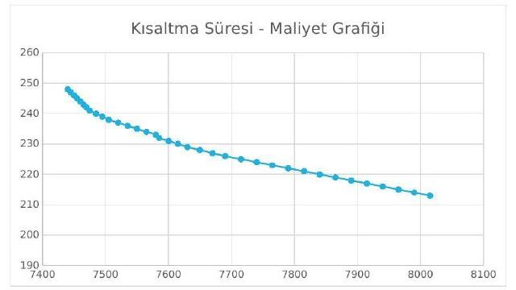

· END355
END355 Proje Yönetimi: Yazılım Projesi, CPM/PERT Ağ Modeli ve Süre-Maliyet Analizi (2015 Proje ve Ödevleri)
END355 – Proje Yönetimi · 09.12.2015 · 14.11.2026
Bu yazı, END355 Proje Yönetimi dersi için Kasım–Aralık 2015'te hazırladığım proje raporlarını ve ödevlerini içeriyor: 50 işlemli bir yazılım projesinin CPM ağ modeli, süre-maliyet kısaltma analizi ve doğrusal programlama (LP) karar modeli; küçük bir 10 işlemli süre-maliyet örneği ve Wayne L. Winston'ın Operations Research kitabındaki iki CPM/LP ödev sorusunun çözümü. Raporlar Word dosyalarından hazırlanmıştır; öğrenci numarası kapatılmış PDF'leri yazının sonunda ZIP olarak indirilebilir. (Raporların bir yerinde ders kodu "END-335" diye yazılmış; dersin kodu END355'tir.)
Proje: bayili bir firmanın bilgi yönetim sisteminin yenilenmesi
Problemin tanımı: Bir merkezi ve bayilikleri bulunan firmanın yönetim bilişim sistemleri, zamanla değişen firma gereksinimlerine ve ilerleyen teknolojiye uygun olarak yenilenecektir. Proje 50 işlemden oluşuyor; her işlem için önceki işlemler, normal süre (gün), maliyet (TL), minimum süre (gün) ve kısaltma maliyeti (TL/gün) belirlenmiştir.
| Kod | İşlem | Önceki | Süre | Maliyet | Min. süre | Kısaltma (TL/gün) |
|---|---|---|---|---|---|---|
| 1 | Başlangıç toplantısı ve proje tanımlama dokümanının kabulü | – | 0 | 0 | 0 | 0 |
| 2 | Mevcut donanımın analizi | 1 | 2 | 60 | 1 | 5 |
| 3 | Mevcut yazılımın analizi | 2 | 5 | 150 | 2 | 10 |
| 4 | Bayi gereksinimlerinin toplanması | 3 | 10 | 300 | 7 | 10 |
| 5 | Üst yönetim raporlama gereksinimlerinin toplanması | 4 | 2 | 60 | 1 | 5 |
| 6 | Müşteri ilişkileri departmanı gereksinimleri | 4 | 2 | 60 | 1 | 5 |
| 7 | Satış ve pazarlama departmanı gereksinimleri | 4 | 2 | 60 | 1 | 5 |
| 8 | Kavramsal tasarım dokümanının oluşturulması | 5,6,7 | 2 | 60 | 1 | 5 |
| 9 | Donanım tasarımı | 8 | 1 | 30 | 1 | – |
| 10 | Veri tabanı tasarımı | 8 | 2 | 60 | 1 | 5 |
| 11 | Veri aktarım programı tasarımı | 10 | 1 | 30 | 1 | – |
| 12 | Yetkilendirme tasarımı | 11 | 1 | 30 | 1 | 5 |
| 13 | Kullanıcı arayüzü tasarımı | 8 | 10 | 300 | 7 | 20 |
| 14 | Rapor tasarımları | 9,12,13 | 5 | 150 | 3 | 15 |
| 15 | Kullanılacak sunucunun siparişinin verilmesi | 14 | 5 | 150 | 2 | 15 |
| 16 | Test sunucusu kurulması | 15 | 2 | 60 | 1 | 5 |
| 17 | Bayi modülünün kavramsal tasarım sunumu | 14 | 2 | 60 | 1 | 5 |
| 18 | Satış ve pazarlama modülünün kavramsal tasarım sunumu | 17 | 1 | 30 | 1 | – |
| 19 | Müşteri ilişkileri modülünün kavramsal tasarım sunumu | 18 | 1 | 30 | 1 | – |
| 20 | Raporlama modülünün kavramsal tasarım sunumu | 14 | 1 | 30 | 1 | – |
| 21 | Proje yönetim planının onaylanması | 16,20,19 | 0 | 0 | 0 | – |
| 22 | Veri tabanı geliştirme | 21 | 5 | 150 | 3 | 15 |
| 23 | Veri aktarım programını geliştirme | 22 | 2 | 60 | 1 | 5 |
| 24 | Yeni sunucunun kurulması ve test sunucunun yedeğe dönüştürülmesi | 23 | 2 | 60 | 1 | 5 |
| 25 | Yetkilendirme geliştirme | 24 | 3 | 90 | 2 | 10 |
| 26 | Kullanıcı arayüzü geliştirme | 24 | 50 | 1500 | 40 | 25 |
| 27 | Raporlama geliştirme | 24 | 10 | 30 | 5 | 20 |
| 28 | Veri aktarım programı testleri | 24 | 10 | 30 | 5 | 20 |
| 29 | Yetkilendirme testleri | 25 | 3 | 90 | 2 | 10 |
| 30 | Kullanıcı arayüzü testleri | 26 | 30 | 900 | 15 | 15 |
| 31 | Raporlama testleri | 27 | 10 | 300 | 5 | 20 |
| 32 | Kapsam doğrulamanın tamamlanması | 28,29,30,31 | 0 | 0 | 0 | – |
| 33 | Tasarım, geliştirme ve test aşamalarında oluşan dokümanların derlenmesi | 32 | 2 | 60 | 1 | 5 |
| 34 | Eğitim dokümanının hazırlanması ve kullanıcılara sunulması | 33 | 5 | 150 | 2 | 10 |
| 35 | Bayi eğitimleri | 34 | 5 | 150 | 1 | 10 |
| 36 | Satış pazarlama departmanı eğitimi | 34 | 1 | 30 | 1 | – |
| 37 | Müşteri ilişkileri departmanı eğitimi | 34 | 1 | 30 | 1 | – |
| 38 | Yönetim için raporlama eğitimi | 34 | 1 | 30 | 1 | – |
| 39 | Sunucunun sistem odasına yerleştirilmesi | 28,29,30,31 | 1 | 30 | 1 | – |
| 40 | Yeni sunucuya son kez veri aktarımı yapılması | 39 | 1 | 30 | 1 | – |
| 41 | Eski sunucunun devre dışı bırakılması ve yedeklerinin alınması | 40 | 1 | 30 | 1 | – |
| 42 | Test sunucusunun devre dışı bırakılması | 41 | 1 | 30 | 1 | – |
| 43 | Destek ekiplerinin kararlaştırılması | 28,29,30,31 | 1 | 30 | 0 | 5 |
| 44 | Telefonda destek ekibinin eğitilmesi | 43 | 14 | 420 | 10 | 25 |
| 45 | İnteraktif destek ekibinin eğitilmesi | 43 | 5 | 150 | 3 | 15 |
| 46 | Yerinde destek ekibinin eğitilmesi | 43 | 21 | 630 | 19 | 25 |
| 47 | Telefonda destek | 44 | 2 | 60 | 1 | 5 |
| 48 | İnteraktif destek | 45 | 2 | 60 | 1 | 5 |
| 49 | Yerinde destek | 46 | 2 | 60 | 1 | 5 |
| 50 | Projenin kapatılması | 44,45,46,35,36,37,38,42 | 0 | 0 | 0 | – |
Kritik yol: 1 – 4 – 5 – 6 – 7 – 8 – 13 – 14 – 15 – 16 – 21 – 22 – 23 – 24 – 26 – 30 – 43 – 46 – 49 – 50. Toplam normal maliyet: 7440 TL.
Proje ağı (serimi)

Süre-maliyet kısaltma tablosu
Raporda en ucuz işten başlayarak birer günlük kısaltmalar sırayla uygulanıyor ve süre-maliyet eğrisi çiziliyor: önce kısaltma maliyeti 5 TL olan işlemler (5, 6, 7, 8, 16, 23, 24, 43, 49), sonra 10 TL'likler (4 üç kez; kritik yol değişmez), 15 TL'likler (14, 15; 15. işlem kısaltılınca kritik yol 15-16 yerine 17-18-19 olur; 17. işlem kısaltılınca hem 15-16 hem de 17-18-19 kritik olur), 22 (15 TL), 13 (20 TL), 26 (25 TL, dokuz gün) ve 43 (25 TL). Grafikte yatay eksen toplam maliyeti (7400–8100 TL), dikey eksen proje süresini (≈190–260 gün) gösterir; süre kısaldıkça maliyet artar.

Not: Raporda "Maliyet toplamda 585 TL azaldı ve 6885 TL oldu" yazıyor. Kısaltma maliyeti eklendiğinden maliyetin azalması beklenmez ve 7440 − 585 = 6855'tir; grafikteki eğri 7440 TL'den yaklaşık 8015 TL'ye doğru artıyor. Cümle muhtemelen "585 TL arttı" anlamında yazılmıştır; metin kaynağa sadık bırakıldı.
Karar modeli (LP)
Her işlem için kısaltma günü (A, B, C, … D2 gibi değişkenler) ve olay zamanları x₁…x₄₁ tanımlanır; hedef toplam kısaltma maliyetini enküçüklemektir. Her işlem için bir öncelik kısıtı yazılır, örneğin:
- x₂ ≥ x₁ + 0 − A
- x₃ ≥ x₂ + 2 − B
- x₄ ≥ x₂ + 10 − C
- x₇ ≥ x₃ + 3 − D
- x₅ ≥ x₄ + 2 − E, x₆ ≥ x₅ + 2 − F, x₇ ≥ x₆ + 2 − G, x₈ ≥ x₇ + 2 − H
- …
- x₄₀ ≥ x₃₂ + 2 − C2, x₄₁ ≥ x₄₀ + 0 − D2
Değişkenlerin üst sınırları işlemlerin en fazla kısaltılabilecek gün sayısıdır (A0, B1, C3, D3, E1, F1, G1, H1, … şeklinde).
Proje 2: 10 işlemli süre-maliyet analizi örneği
Aynı projenin ilk 10 işlemi (A–J) ile örnek bir süre-maliyet analizi yapılıyor:
| İşlem | Ad | Önceki | Normal süre | Normal maliyet (TL) | En kısa süre | Kısaltma (TL/gün) |
|---|---|---|---|---|---|---|
| A | Başlangıç toplantısı ve proje tanımlama dokümanının kabulü | – | 0 | 80 | 0 | – |
| B | Mevcut donanım analizi | A | 2 | 10 | 1 | 2 |
| C | Mevcut yazılım analizi | A | 5 | 20 | 3 | 6 |
| D | Bayi gereksinimlerinin toplanması | B,C | 10 | 40 | 5 | 3 |
| E | Üst yönetim raporlama gereksinimleri | D | 2 | 60 | 2 | – |
| F | Müşteri ilişkileri departmanı gereksinimleri | D | 2 | 30 | 2 | – |
| G | Satış ve pazarlama departmanı gereksinimleri | D | 2 | 10 | 2 | – |
| H | Kavramsal tasarım dokümanı | B,E,F | 2 | 50 | 1 | 20 |
| I | Donanım tasarımı | F | 1 | 70 | 1 | – |
| J | Test sunucusu kurulması | I,H,G | 2 | 90 | 1 | 20 |
Kritik yol A–C–D–E–H–J: toplam normal süre 0 + 5 + 10 + 2 + 2 + 2 = 21 gün, toplam maliyet 80 + 10 + 20 + 40 + 60 + 30 + 10 + 50 + 70 + 90 = 460 TL. Kısaltmalar: C işi 2 gün (+12 TL), D işi 5 gün (+15 TL), H işi 1 gün (+20 TL; böylece I işi de kritik yola girer), J işi 1 gün (+20 TL). B ve G işlerini kısaltmanın anlamı yoktur, çünkü kritik yol onlardan geçmez. Sonuç: süre 9 gün kısalarak 12 güne iner, maliyet 460 TL'den 67 TL artarak 527 TL olur.
Raporun ikinci kısmında (2. proje raporu) aynı 50 işlem, işlem kodları ve öncül kısaltmalarıyla (AI, A, B, …) bir tablo olarak da verilmiştir.
Winston CPM–PERT ve LP soruları
Dersin ödev olarak verdiği, Wayne L. Winston Operations Research (3. baskı, s. 431, Grup A) sorularından iki çözüm:
Soru 4 – Rock konseri. Indianapolis'te bir rock konserinin organizatörü, konserden önce şu işleri yapmalıdır: A site bulma (öncül yok), B mühendis bulma (A), C açılış grubu tutma (A), D radyo-TV reklamları (C), E bilet acenteleri (A), F elektronik hazırlık (B), G reklam basımı (C), H ulaşım ayarlanması (C), I prova (F, H), J son dakika işleri (I). (a) Projenin kritik yolunu bulmak için kurulabilecek LP'yi yazınız. Çözümde ağ çizilir; süreler A=3, B=2, C=6, D=2, E=3, F=3, G=5, H=1, I=1,5, J=2 gün olarak okunur ve x_j, j düğümünün gerçekleştiği zaman olmak üzere kısıtlar yazılır.
Soru 5 – Ev inşaatı. A temel (5 gün), B duvar ve tavan (A; 8), C çatı (B; 10), D elektrik tesisatı (B; 5), E pencere (B; 4), F dış kaplama (E; 6), G boya (C, F; 3). (a) Proje ağını çizin, kritik yolu bulun, her işlem için toplam ve serbest bolluk (total float, free float) hesaplayın. (b) Süreler ek işçiyle kısaltılabiliyorsa (günlük maliyetler: temel 30 $ – en çok 2 gün, duvar-tavan 15 $ – 3, çatı 20 $ – 1, elektrik 40 $ – 2, pencere 20 $ – 2, dış kaplama 30 $ – 3, boya 40 $ – 1), projeyi 20 günde bitirmenin toplam maliyetini enküçükleyen LP'yi yazın.
Çözüm (a): ET/LT değerleri ET(1)=0, ET(2)=5, ET(3)=13, ET(4)=17, ET(5)=23, ET(6)=26 (LT'ler eşit); 1–2–3–5–6 ve 1–2–3–4–5–6 yollarının ikisi de kritiktir, proje süresi 26 gün; D işi (3,6) için toplam ve serbest bolluk 8 gündür, diğerleri 0. (b) kısmında her işlemin kısaltma günü değişkeni ve x_j olay zamanları ile LP kurulur.
ZIP dosyasında ayrıca bir Excel çalışmasından alınan "Kaynak Planlaması Sonrası Günlere Göre Kaynak Dağılımı" grafiği (12 günlük kaynak miktarı sütun grafiği) bulunur.